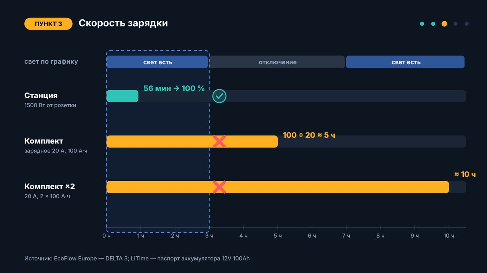

Алгоритм дома
Пошаговые расчёты для дома, которому не страшны отключения
Разбираем, как посчитать и собрать резервное питание, выбрать аккумулятор и инвертор, не переплатить и не рисковать проводкой. Каждый расчёт — по шагам, с формулами и источниками.
Алгоритмы
 Выпуск 1 · электричество
Резервное питание квартиры: расчёт по шагам
Холодильник, роутер, свет и ноутбук на 6 часов отключения: какой нужен аккумулятор и инвертор.
Выпуск 1 · электричество
Резервное питание квартиры: расчёт по шагам
Холодильник, роутер, свет и ноутбук на 6 часов отключения: какой нужен аккумулятор и инвертор.

Выпуск 2 · электричество Зарядная станция или свой комплект: что выгоднее Цена за ватт-час, расширение, скорость зарядки, переключение при отключении и ремонт.СкороРезервное питание газового котлаЧтобы дом не остыл без света.
СкороСолнечная панель на балкон или дачуСколько панелей, какой контроллер, что реально даст солнце.
Калькуляторы
Резервное питание квартиры. Введите свои приборы и время отключения — получите ёмкость аккумулятора, мощность инвертора и ток в проводах.
Открыть калькуляторКак мы работаем
Цифры из первоисточниковПаспорта и даташиты производителей, нормы и ведомства по безопасности. Что не подтвердилось — не попадает в ролик.
Формулы открытыКаждый шаг расчёта виден, его можно повторить с калькулятором или на бумаге.
Безопасность прежде всегоОтдельно говорим, что можно сделать самому, а что — только электрику.